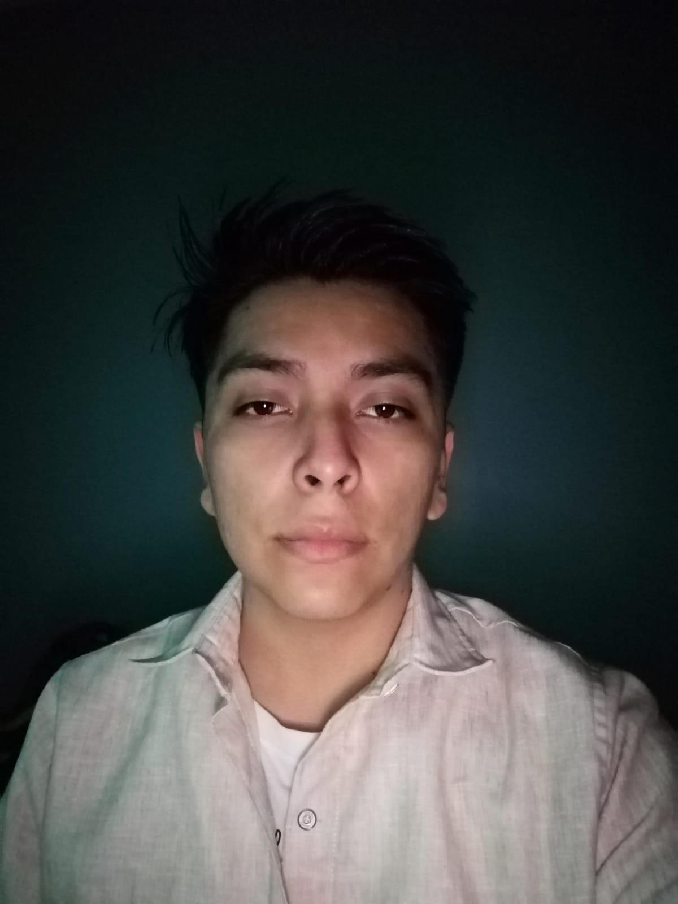

Juan Eduardo Terán Cortez
Dirección: Circuito Huele de Noche #103, Natura, Aguascalientes
Tel: 449 375 8277
Email: bardok676@gmail.com
Edad: 21 años
Fecha de nacimiento: 9 de octubre de 2003
Perfil Profesional
Joven proactivo y responsable con experiencia en control de calidad en entornos industriales. Busco una oportunidad para desarrollarme en el área administrativa o de ventas, aportando mis conocimientos técnicos, habilidades organizativas y actitud de aprendizaje constante.
Experiencia Laboral
Sensata Technologies — Aguascalientes, Área de Calidad (2021 - 2022)
- Inspección y validación de productos electrónicos.
- Cumplimiento de estándares de calidad.
- Uso de herramientas básicas de medición.
- Supervisor: Gustavo
Tel: 449 190 4707
Sistema de Arnéses — Aguascalientes, Operario de Calidad (2022 – 6 meses)
- Verificación de piezas eléctricas y cableado automotriz.
- Registro de productos no conformes e incidencias.
- Trabajo bajo presión en líneas de producción.
- Supervisor: Mauricio Villela
Tel: 449 892 9972
Formación Académica
- Primaria: Primaria Centenario (2010)
- Secundaria: Escuela Secundaria Mahatma Gandhi No. 34
- Preparatoria: Alexander Hamilton (en curso)
- Estudios autodidactas: Desarrollo web (HTML, CSS, JS) - FreeCodeCamp
- En proceso de certificación en programación web básica
Conocimientos Técnicos
- Microsoft Excel, Word, correo electrónico
- HTML, CSS y JavaScript (nivel básico)
- Herramientas digitales para tareas administrativas
- WhatsApp Business y plataformas de comunicación
Idiomas
- Español: Nativo
- Inglés: Básico
Cualidades Personales
- Puntual y responsable
- Aprendizaje rápido
- Buena actitud y organización